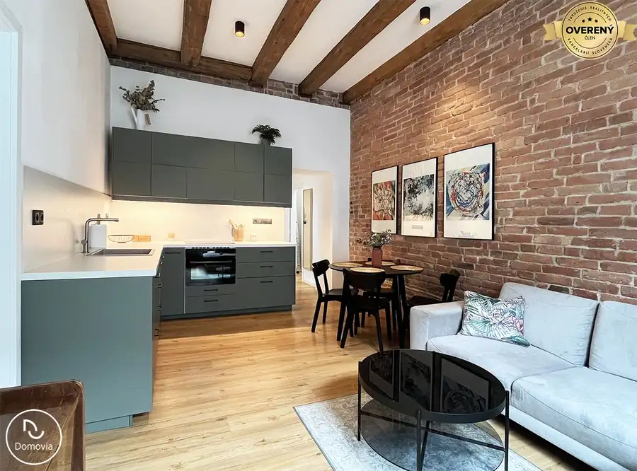
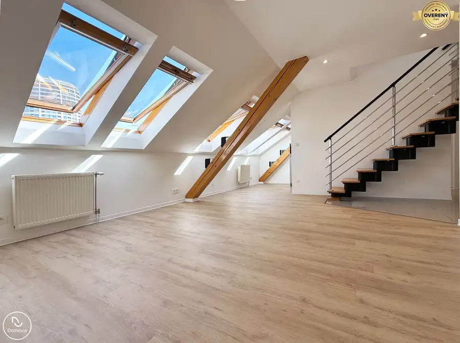
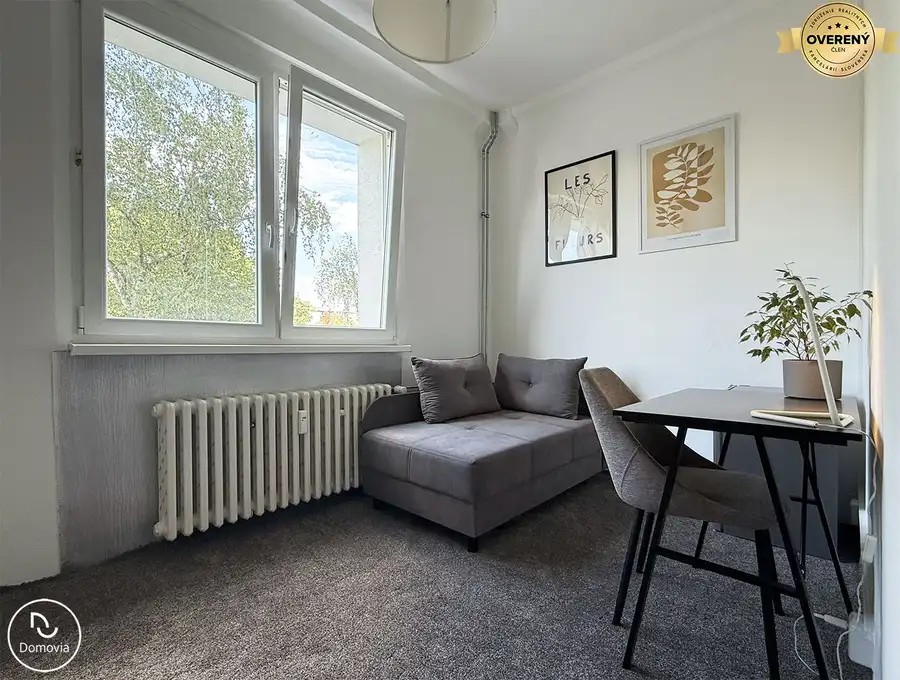
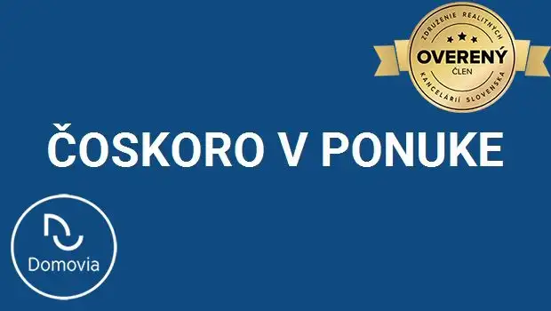
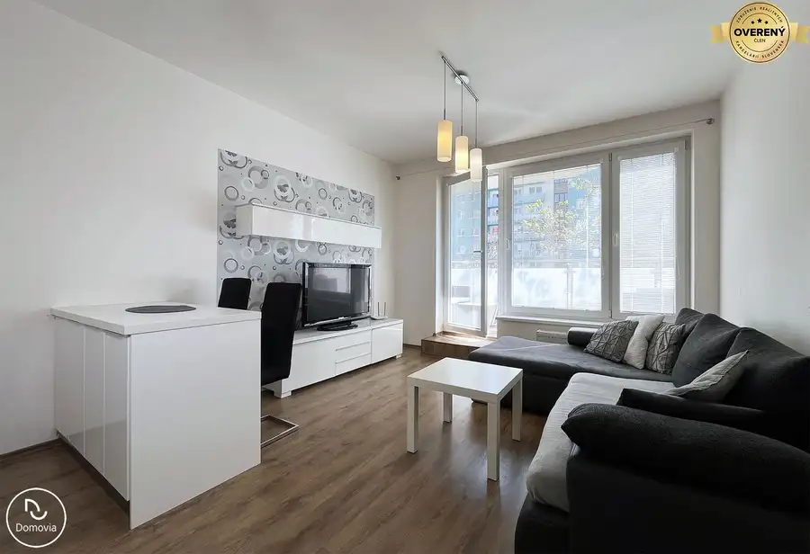

Aktuálna ponuka
9 nehnuteľností, predovšetkým byty, apartmány, rodinné domy. Každá má vlastnú stránku s fotkami, popisom a mapou.
Prezrieť ponuku
Lukáš TrubaRealitný maklér
Realitný maklér · Domovia
Predaj a prenájom nehnuteľností · Bratislava, Ružomberok, Rovinka

 Apartmány10
127 000 €Posledné voľné apartmány priamo od developera – Malinô Brdo, Hrabovo
Ružomberok
Ponúkame na predaj posledné jednotky chalet apartmánov v novovybudovanom projekte priamo pod zjazdovkou lyžiarskeho strediska Malinô Brdo v…
Byt10
1 000 €Krátkodobý prenájom apartmánu s parkovaním v Bratislave
Petržalka, Bratislava
28 m²
Ponúkame na krátkodobý prenájom (týždeň, 1 mesiac, 2 mesiace) novo zrekonštruované, štýlové štúdio s balkónovým priestorom, plne vybavenou kuchyňou a…
Rodinné domy10
320 000 €Exkluzívne | Na predaj rodinný dom pri Veľkom jazere v Rovinke
Rovinka
4-izbový127 m²
Realitná kancelária Domovia ponúka exkluzívne na predaj 4-izbový tehlový rodinný dom v unikátnej lokalite pri jazere Veľké Košariská v Rovinke. Dom…
Apartmány10
127 000 €Posledné voľné apartmány priamo od developera – Malinô Brdo, Hrabovo
Ružomberok
Ponúkame na predaj posledné jednotky chalet apartmánov v novovybudovanom projekte priamo pod zjazdovkou lyžiarskeho strediska Malinô Brdo v…
Byt10
1 000 €Krátkodobý prenájom apartmánu s parkovaním v Bratislave
Petržalka, Bratislava
28 m²
Ponúkame na krátkodobý prenájom (týždeň, 1 mesiac, 2 mesiace) novo zrekonštruované, štýlové štúdio s balkónovým priestorom, plne vybavenou kuchyňou a…
Rodinné domy10
320 000 €Exkluzívne | Na predaj rodinný dom pri Veľkom jazere v Rovinke
Rovinka
4-izbový127 m²
Realitná kancelária Domovia ponúka exkluzívne na predaj 4-izbový tehlový rodinný dom v unikátnej lokalite pri jazere Veľké Košariská v Rovinke. Dom…

Byt10 320 000 €Znížená cena | Na predaj výnimočný 2i byt pri Trnavskom mýte Nové Mesto, Bratislava 2-izbový57 m²1. podlažie Realitná kancelária Domovia ponúka exkluzívne na predaj výnimočný 2 izbový byt s vysokými stropmi nachádzajúci sa vo vyhľadávanej lokalite pri…
Byt8 338 000 €Exkluzívne | Na predaj 3i mezonetový byt v Starom Meste Staré Mesto, Bratislava 3-izbový60 m²6. podlažie Realitná kancelária Domovia ponúka exkluzívne na predaj výnimočný 3 izbový mezonetový byt nachádzajúci sa vo vyhľadávanej lokalite pri Jakubovom…
Byt10 Cena dohodouBez provízie | Na prenájom útulná garsónka na Trnavskom mýte Nové Mesto, Bratislava 15 m²2. podlažie Bez provízie | Realitná kancelária Domovia ponúka exkluzívne na prenájom (aj krátkodobo) útulnú garsónku vo vyhľadávanej lokalite v blízkosti starého… Byt10
Cena dohodouExkluzívne | Veľkorysý 2i byt s loggiou Bosakova, Petržalka
Petržalka, Bratislava
2-izbový74 m²4. podlažie
Realitná kancelária Domovia ponúka exkluzívne na prenájom kompletne zariadený 2-izbový byt s veľkorysou loggiou v obľúbenej lokalite Bratislavy na…
Byt10
Cena dohodouExkluzívne | Veľkorysý 2i byt s loggiou Bosakova, Petržalka
Petržalka, Bratislava
2-izbový74 m²4. podlažie
Realitná kancelária Domovia ponúka exkluzívne na prenájom kompletne zariadený 2-izbový byt s veľkorysou loggiou v obľúbenej lokalite Bratislavy na…

Byt Cena dohodouPripravujeme | Krásny 2i byt v novostavbe PRI MÝTE Nové Mesto, Bratislava 2-izbový55 m²2. podlažie Realitná kancelária Domovia pripravuje do ponuky na prenájom krásny 2 izbový byt s priestranným balkónom v novostavbe PRI MÝTE na Račianskej ulici v…
BytPredané10 PredanéNa predaj 2i nebyt. priestor Lužná na začiatku Petržalky Petržalka, Bratislava 2-izbový57 m²2. podlažie Tento byt na Lužnej ulici je už predaný. V prípade ak hľadáte podobný byt v tejto lokalite môžete nás kontaktovať, radi vám pomôžeme s hľadaním…Tomuto výberu zatiaľ nezodpovedá žiadna ponuka. Napíšte mi, čo hľadáte.
Volám sa Lukáš Truba. Som realitný maklér kancelárie Domovia a pôsobím predovšetkým v lokalitách Bratislava, Ružomberok a Rovinka (Žilinský kraj).
9 nehnuteľností, predovšetkým byty, apartmány, rodinné domy. Každá má vlastnú stránku s fotkami, popisom a mapou.
Prezrieť ponukuBratislava, Ružomberok, Rovinka a okolie. Ponuku si môžete prezrieť podľa lokality.
Nehnuteľnosti v lokaliteOdhad trhovej ceny, príprava prezentácie, obhliadky, zmluvy a odovzdanie nehnuteľnosti.
Dohodnúť stretnutieNa čo sa pýtate najčastejšie, skôr než sa stretneme.
Odhad trhovej ceny vychádza z aktuálnych ponúk a predajov v lokalite, nie z cenníkových tabuliek. Podmienky Vám poviem pri prvom telefonáte.
Najprv obhliadka a odhad ceny, potom príprava prezentácie (fotografie, popis, inzercia), obhliadky so záujemcami, rezervačná zmluva, kúpna zmluva, návrh na vklad do katastra a odovzdanie nehnuteľnosti. O každom kroku viete vopred.
Najrýchlejšie cez WhatsApp alebo telefón. Termín stretnutia alebo obhliadky dohodneme podľa Vás.